Summary
This article outlines the process of adding Microsoft Entra ID (formerly Azure AD) to Privilege Secure as an Authentication Connector via SAML. The article is split into two sections, Steps for Microsoft Entra ID and Steps for Privilege Secure. The Azure section must be completed first.
Instructions
Steps for Microsoft Entra ID
- In a web browser, navigate to https://portal.azure.com/ and sign-in as an admin. You'll need to create an Enterprise Application and gather several pieces of information to complete the Privilege Secure Configuration Wizard steps later in this article.
- In Azure, click Azure Active Directory from the left sidebar. Then, click Enterprise Applications from the left sidebar.
- Click New Application near the top of the Enterprise Applications page, followed by Create Your Own Application on the page that follows.
Give the app any name, and set the radio button to Integrate any other application you don't find in the gallery (Non-gallery). Click Create.
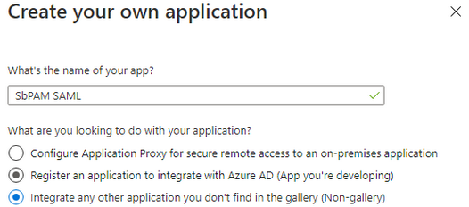 - You'll be redirected to the new app's Overview page.
In the left sidebar, select Single sign-on, then select SAML.
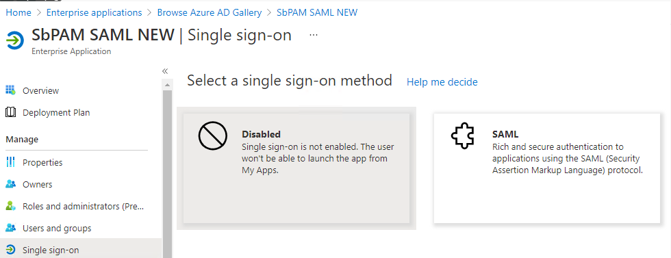
- For Step 1 in this wizard (Basic SAML Configuration), click Edit.
Change the Identifier (Entity ID) to sbpamsaml.stealthbits.com, and set it to be the default.
For the Reply URL (Assertion Consumer Service URL), use the following URL (changing the hostname to the hostname used to access Privilege Secure via a web browser):
https://<sbpam-hostname>:6500/samlSigninCallback
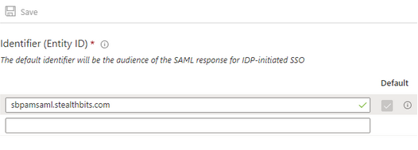
Click Save after making changes, and then close the editor for Basic SAML Configuration.
- Scroll down to section 3, and download the Certificate (Base64).
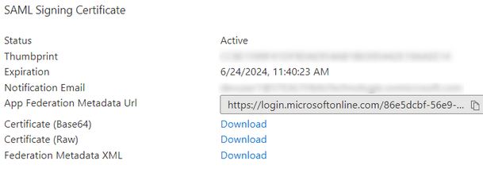
- Scroll down to section 4, and copy the Login URL for later use.
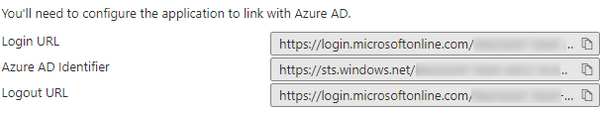
- In the left sidebar, click on Users and Groups. Add an Microsoft Entra ID user to this page (Add user/group button near the top).
This user should be accessible to whoever will complete the Steps for Privilege Secure, as they need to be able to log-in to this user to complete the Authentication Connector Configuration Wizard for SAML in Privilege Secure. - Sign-out of Microsoft Entra ID.
- At this point, you should have the following pieces of information for use in the Steps for Privilege Secure:
- Certificate (Base64)
- Login URL
- Microsoft Entra ID user (associated with the Enterprise Application and can be logged-in to by whoever will complete the Privilege Secure portion of this article)
Steps for Privilege Secure
- As a Privilege Secure Admin, navigate in Privilege Secure to Configuration > Authentication, and click the green "+" button to add a new Authentication Connector.
- Give the new connector a name, description (optional), and a Connector Type of "SAML".
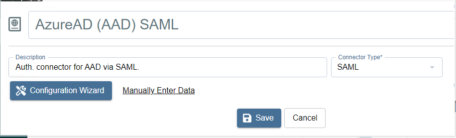
- Click on Configuration Wizard.
- On the Configure Client page of that wizard, use the Login URL in the Signin URI field (the Login URL was obtained in the Steps for Microsoft Entra ID). All fields should now be filled in.
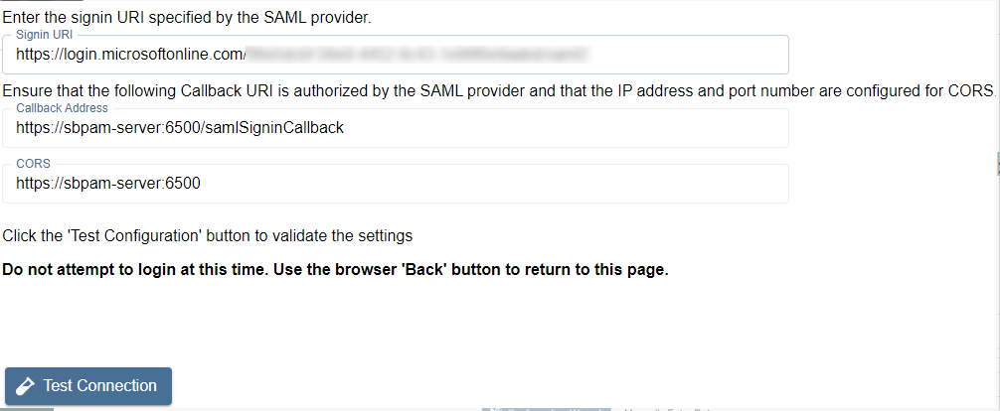
- Click Test Connection.
On the page that loads (Microsoft Entra ID sign-in page), DO NOT SIGN-IN. Instead, once you've verified that the sign-in page loaded property, click the back button in the browser to return to Privilege Secure (the connection test was successful if Microsoft Entra ID didn't display an error). - Click Next to advance in the Authentication Connector Configuration Wizard. You'll now be on the wizard's Test Login page.
- Open the certificate obtained during the Steps for Microsoft Entra ID. Copy the text between -----BEGIN CERTIFICATE----- and -----END CERTIFICATE----- into the Certificate field in the Authentication Connector Configuration Wizard.
- Click Login, and log-in as the Microsoft Entra ID user associated with the Enterprise Application from Step 8 in the Steps for Microsoft Entra ID. Upon successful sign-in, you'll be redirected back to the wizard in Privilege Secure.
If the sign-in was successful, the Provider User Name/Id will display. This is passed to the UserTokenController so that the user information can be extracted. Click Next. - You will now be on the Configure Id Mapping page.
SpPAM will use the access token to retrieve user data from the SAML provider. The SAML provider requires a User Id Field for sign-in. It is necessary to specify which field in Active Directory should map to that User Id Field, so that Privilege Secure can automatically fill in the required credentials at log-in. The value provided is used to sign-in to the multi-factor authenticator (MFA) when a user logs-in to the Privilege Secure Console.
The table displays the retrieved data that can be used for the host user lookup. The user must select from the displayed records a field that corresponds to a value in their AD configuration. For example, if the AD data contains email addresses, they can select any of the fields which contain email addresses.
In simple terms, there needs to be a property for each user in on-prem Active Directory and Microsoft Entra ID that matches. Often, this is an email address.
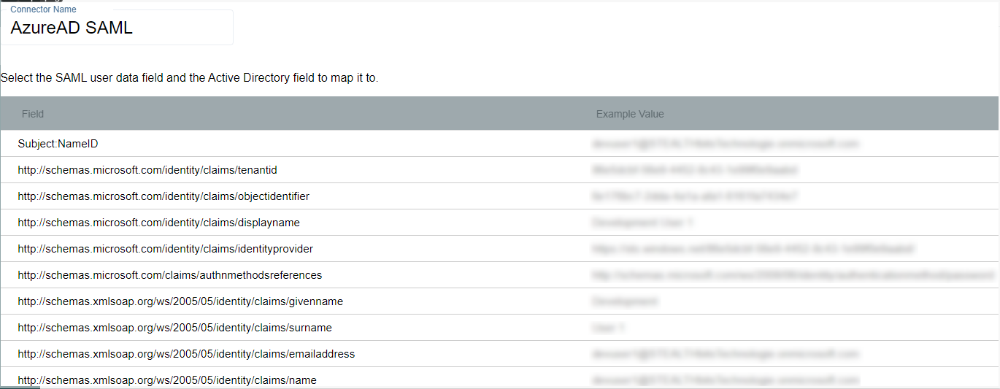
Once the desired field has been found, click on it and then click Select (you may need to scroll down in the modal to see this button). - You will now be back in the Authentication Connector Configuration Wizard, on the Configure Id Mapping page. Make sure the Login Format dropdown is for a format that will match the ID Token field selected from Microsoft Entra ID in the previous step.
For example, if you chose Email for the field in the previous step then this dropdown should also be Email Address.
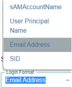 - Click Next. On the next page, enter the following for the Signout URI:
https://login.microsoftonline.com/common/oauth2/logout?post_logout_redirect_uri
Click Test Log Out to sign out of the SAML provider. If the log out was performed correctly, click Finish then Okay, otherwise confirm the settings and try again.
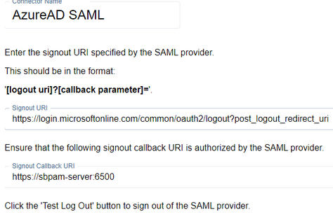
- You can now assign this authentication connector to a user via the Authentication Connector tab for a user accessed in Privilege Secure's Users & Groups page.
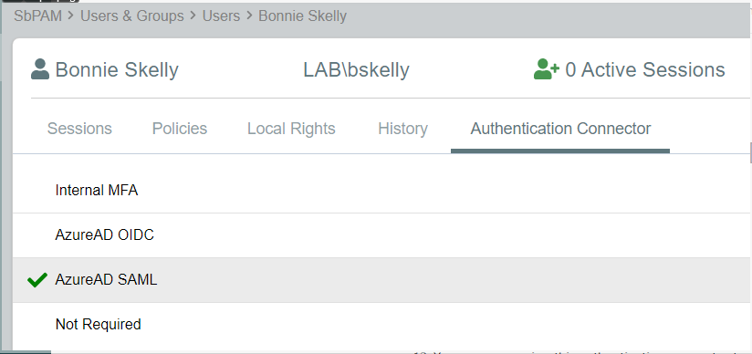
Users with this authentication connector assignment can now use this authentication connector option on the Privilege Secure log-in screen.
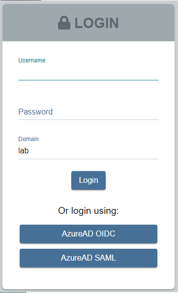
When using the SAML log-in option, the user will be redirected to sign-in to Microsoft Entra ID. Upon successful authentication, the user will be redirected to the Privilege Secure UI as their now signed-in user.